En el presente espacio les presentamos las actividades que a participado nuestra empresa Villa Automation S.A.C
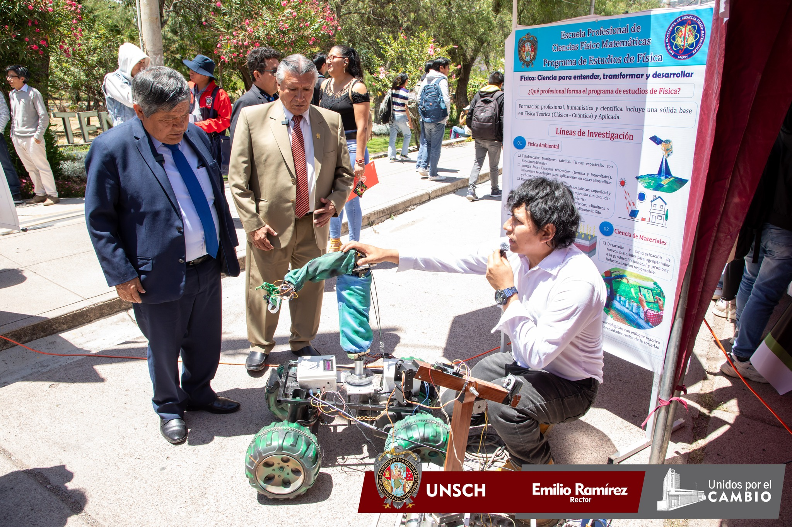En Villa Automation EIRL, nuestra visión es impulsar el desarrollo tecnológico desde Ayacucho hacia todo el Perú. Por ello, nuestra empresa participa activamente en eventos, ferias y congresos científicos y tecnológicos, donde presentamos nuestras soluciones en automatización, robótica, inteligencia artificial y sistemas aeroespaciales. A continuación, detallamos los principales eventos donde hemos tenido presencia:
En octubre de 2025, Villa Automation presentó su proyecto de robótica y automatización avanzada en la Universidad Nacional Autónoma de Huanta, mostrando robots colaborativos y sistemas aplicados a agricultura, industria y defensa. La actividad incluyó talleres prácticos y demostraciones directas con estudiantes.
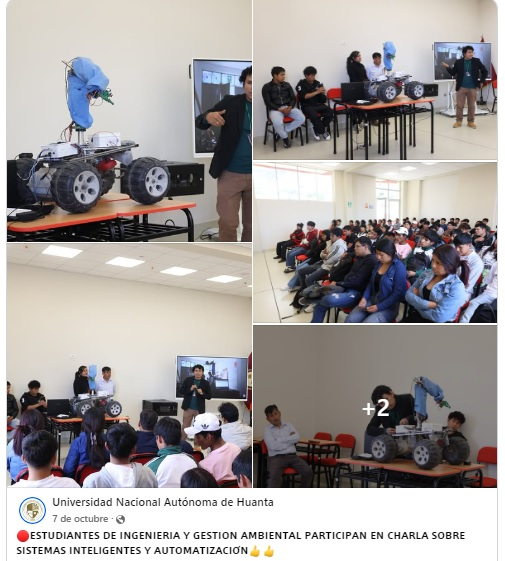 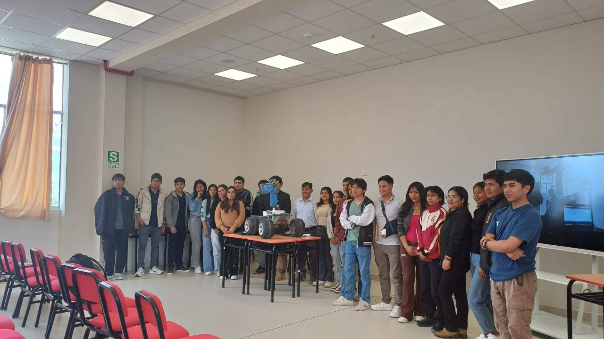
Organizado junto a YLEM Perú, el primer torneo nacional de robots de combate se realizará en junio del 2025 en la Facultad de FISMA – UNSCH. Incluye medallas, diplomas, kits de robótica, becas y premios especiales para los ganadores. Un evento histórico para la robótica competitiva en Ayacucho.
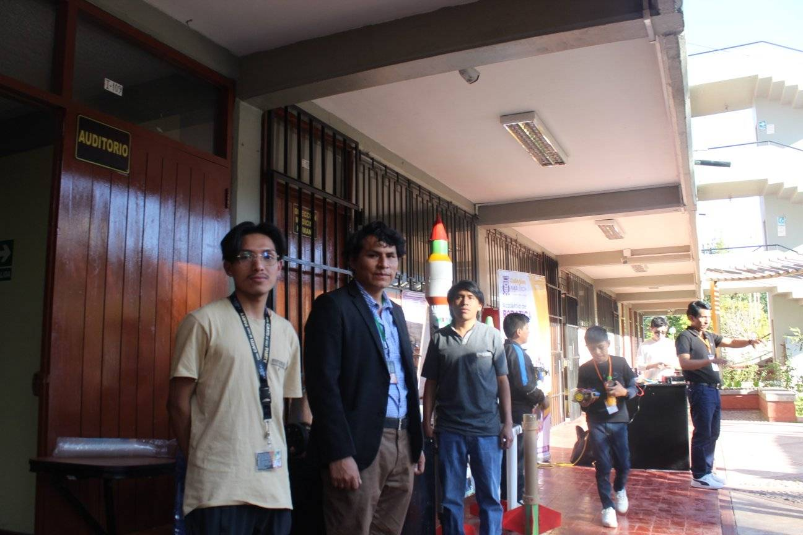 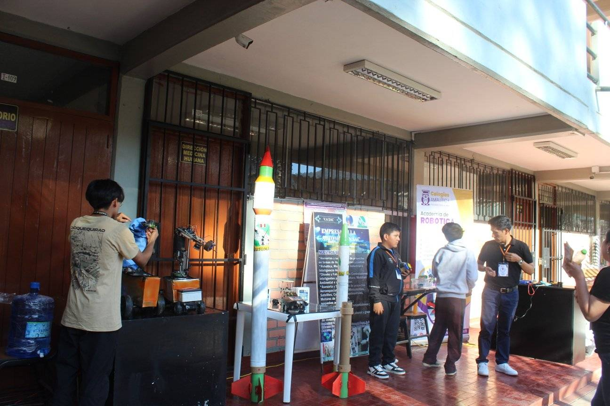
Participamos en las ferias científicas 2023, 2024 y 2025 mostrando robots todoterreno, sistemas de automatización industrial, drones, vehículos no tripulados y controladores ambientales inteligentes desarrollados por nuestra empresa.
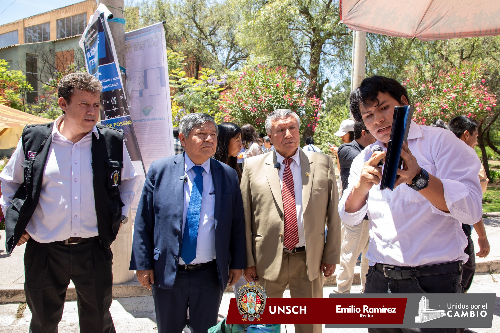 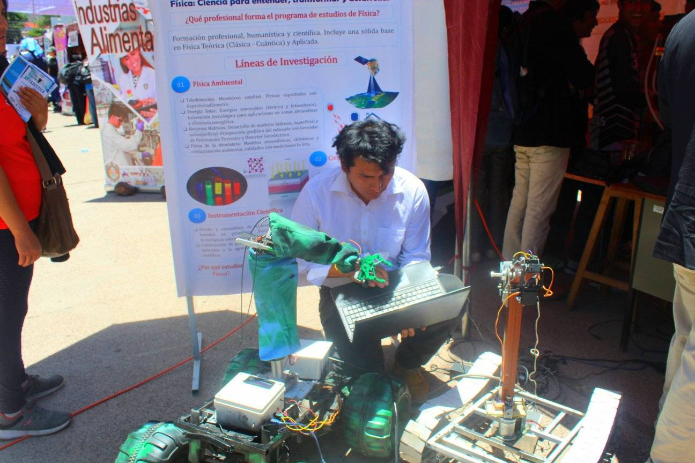
Nuestro director presentó los desarrollos de Villa Automation en robótica colaborativa para defensa, tecnología aeroespacial, y los proyectos de cohetes JICAAT. Esta exposición resaltó el liderazgo tecnológico de Ayacucho a nivel iberoamericano.
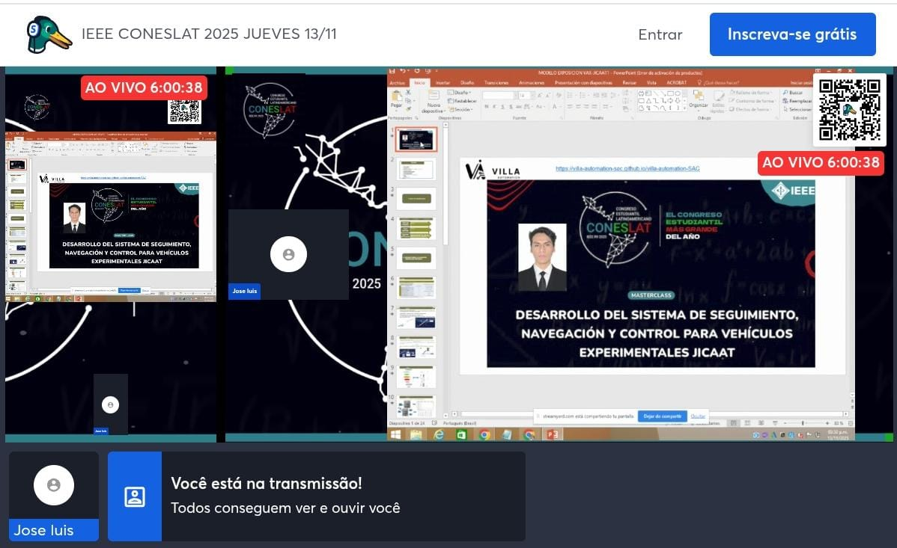 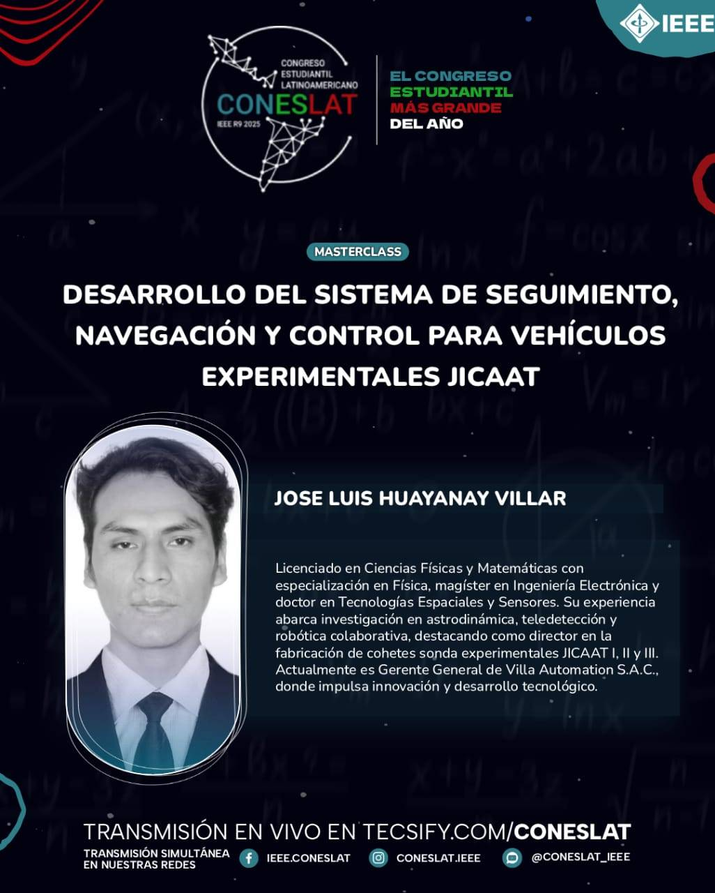
Presentamos el robot colaborativo táctico con visión artificial y orugas para reconocimiento y apoyo estratégico. Recibimos reconocimiento por nuestro aporte al desarrollo tecnológico para el sector defensa.
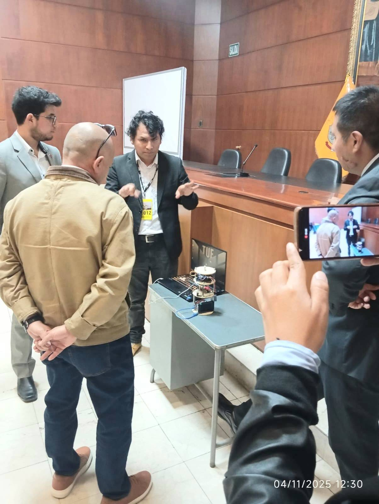 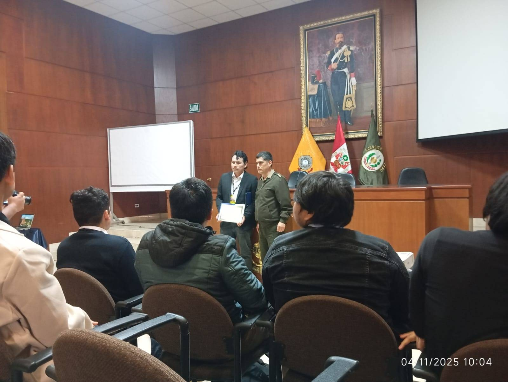
Villa Automation participó en la Feria Tecnológica del Colegio Amautic presentando demostraciones en vivo de brazos robóticos, controladores educativos y sistemas de automatización. Los estudiantes interactuaron directamente con nuestros prototipos y aprendieron sobre robótica aplicada, ayudando a impulsar su interés por la ciencia y la ingeniería.
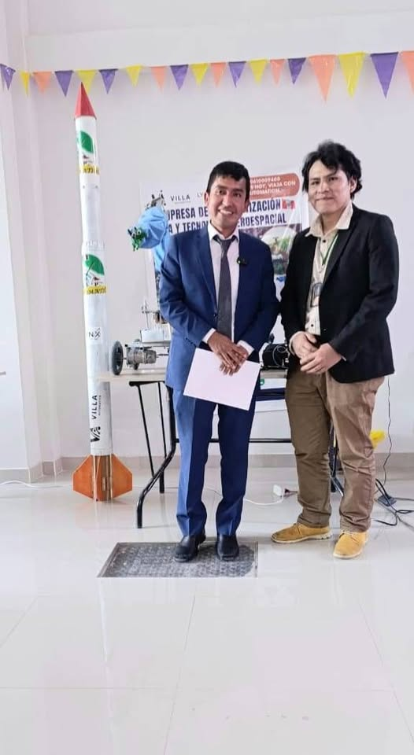 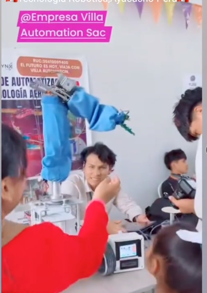
Cada año realizamos talleres, convivencias tecnológicas, charlas y demostraciones en colegios, institutos y universidades. Las actividades incluyen programación, robótica educativa, IA aplicada, automatización y proyectos prácticos interactivos.